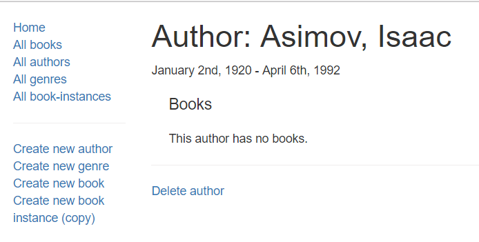
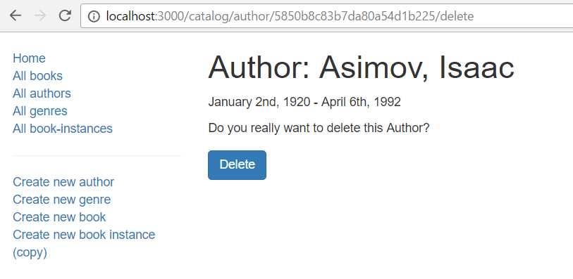
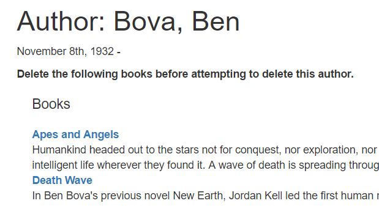

This subarticle shows how to define a page to delete Author objects.
As discussed in the form design section, our strategy will be to only allow deletion of objects that are not referenced by other objects (in this case that means we won't allow an Author to be deleted if it is referenced by a Book). In terms of implementation this means that the form needs to confirm that there are no associated books before the author is deleted. If there are associated books, it should display them, and state that they must be deleted before the Author object can be deleted.
Open /controllers/authorController.js. Find the exported author_delete_get() controller method and replace it with the following code.
// Display Author delete form on GET.
exports.author_delete_get = function(req, res, next) {
async.parallel({
author: function(callback) {
Author.findById(req.params.id).exec(callback)
},
authors_books: function(callback) {
Book.find({ 'author': req.params.id }).exec(callback)
},
}, function(err, results) {
if (err) { return next(err); }
if (results.author==null) { // No results.
res.redirect('/catalog/authors');
}
// Successful, so render.
res.render('author_delete', { title: 'Delete Author', author: results.author, author_books: results.authors_books } );
});
};
The controller gets the id of the Author instance to be deleted from the URL parameter (req.params.id). It uses the async.parallel() method to get the author record and all associated books in parallel. When both operations have completed it renders the author_delete.pug view, passing variables for the title, author, and author_books.
Note: If findById() returns no results the author is not in the database. In this case there is nothing to delete, so we immediately render the list of all authors.
}, function(err, results) {
if (err) { return next(err); }
if (results.author==null) { // No results.
res.redirect('/catalog/authors')
}
Find the exported author_delete_post() controller method, and replace it with the following code.
// Handle Author delete on POST.
exports.author_delete_post = function(req, res, next) {
async.parallel({
author: function(callback) {
Author.findById(req.body.authorid).exec(callback)
},
authors_books: function(callback) {
Book.find({ 'author': req.body.authorid }).exec(callback)
},
}, function(err, results) {
if (err) { return next(err); }
// Success
if (results.authors_books.length > 0) {
// Author has books. Render in same way as for GET route.
res.render('author_delete', { title: 'Delete Author', author: results.author, author_books: results.authors_books } );
return;
}
else {
// Author has no books. Delete object and redirect to the list of authors.
Author.findByIdAndRemove(req.body.authorid, function deleteAuthor(err) {
if (err) { return next(err); }
// Success - go to author list
res.redirect('/catalog/authors')
})
}
});
};
First we validate that an id has been provided (this is sent via the form body parameters, rather than using the version in the URL). Then we get the author and their associated books in the same way as for the GET route. If there are no books then we delete the author object and redirect to the list of all authors. If there are still books then we just re-render the form, passing in the author and list of books to be deleted.
Note: We could check if the call to findById() returns any result, and if not, immediately render the list of all authors. We've left the code as it is above for brevity (it will still return the list of authors if the id is not found, but this will happen after findByIdAndRemove()).
Create /views/author_delete.pug and copy in the text below.
extends layout
block content
h1 #{title}: #{author.name}
p= author.lifespan
if author_books.length
p #[strong Delete the following books before attempting to delete this author.]
div(style='margin-left:20px;margin-top:20px')
h4 Books
dl
each book in author_books
dt
a(href=book.url) #{book.title}
dd #{book.summary}
else
p Do you really want to delete this Author?
form(method='POST' action='')
div.form-group
input#authorid.form-control(type='hidden',name='authorid', required='true', value=author._id )
button.btn.btn-primary(type='submit') DeleteThe view extends the layout template, overriding the block named content. At the top it displays the author details. It then includes a conditional statement based on the number of author_books (the if and else clauses).
Author may be deleted.POST request and that author's record will be deleted.Next we will add a Delete control to the Author detail view (the detail page is a good place from which to delete a record).
Note: In a full implementation the control would be made visible only to authorized users. However at this point we haven't got an authorization system in place!
Open the author_detail.pug view and add the following lines at the bottom.
hr p a(href=author.url+'/delete') Delete author
The control should now appear as a link, as shown below on the Author detail page.

Run the application and open your browser to http://localhost:3000/. Then select the All authors link, and then select a particular author. Finally select the Delete author link.
If the author has no books, you'll be presented with a page like this. After pressing delete, the server will delete the author and redirect to the author list.

If the author does have books, then you'll be presented with a view like the following. You can then delete the books from their detail pages (once that code is implemented!).

Note: The other pages for deleting objects can be implemented in much the same way. We've left that as a challenge.